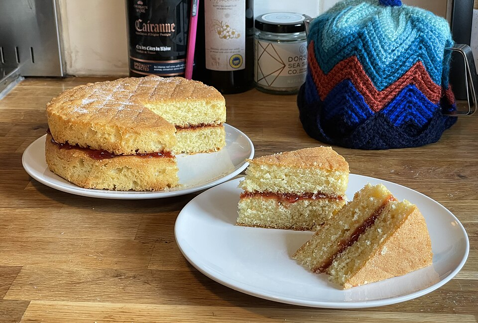

Два проверенных рецепта — выбирай

Веди вес яиц — все ингредиенты посчитаются сами. Обычный, шоколадный или пряный, в одну чашу.
Домашний плов по видео Сталика Ханкишиева: считаем от веса мяса. Девзира или басмати.
Фото: Farg'onacha osh и Victoria Sponge Cake (Wikimedia Commons) Сделано для семейной чайной паузы ❤️